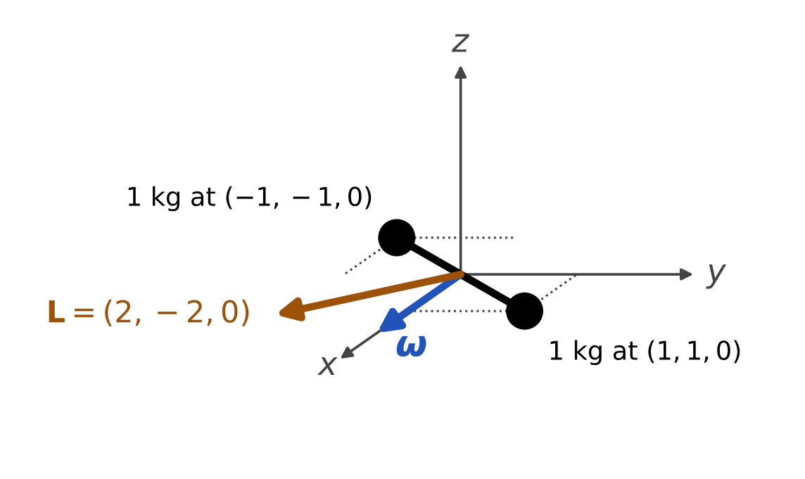
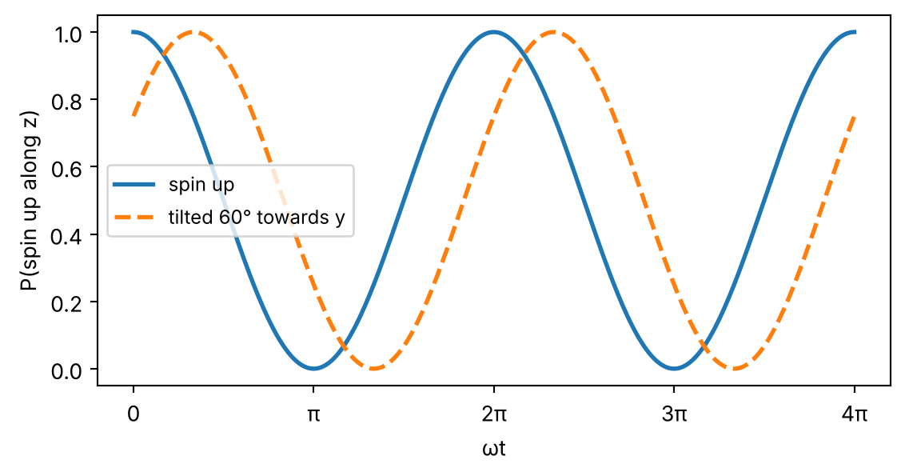

Physics is full of quantities that are not numbers or vectors but linear maps from vectors to vectors. Spin a rigid body about some axis, and its angular momentum generally points in a different direction: the map from angular velocity to angular momentum is a matrix, the inertia tensor. That is why an unbalanced car wheel wobbles, and why a thrown book spins steadily about two of its axes but tumbles about the third. In quantum mechanics, matrices go further still: the state of a system is a vector, every measurable quantity is a symmetric (or more precisely Hermitian) matrix, and the possible results of a measurement are its eigenvalues. This chapter shows three places where the linear algebra of this book is the physics.
38.2 The model
The inertia tensor
A rigid body made of point masses \(m_k\) at positions \(\vect{r}_k\) (relative to its centre of mass) rotates with angular velocity \(\vect{\omega}\): the axis of rotation is the direction of \(\vect{\omega}\) and the rate is its length. Each mass moves with velocity \(\vect{\omega} \times \vect{r}_k\), and the total angular momentum works out to be \[
\vect{L} = \M{I}\vect{\omega},
\qquad
\M{I} = \sum_k m_k\left(\lVert\vect{r}_k\rVert^2\M{I}_3 - \vect{r}_k\vect{r}_k\T\right),
\] where \(\M{I}_3\) is the \(3 \times 3\) identity. The inertia tensor\(\M{I}\) is symmetric and positive semidefinite. Its diagonal entries are the familiar moments of inertia about the axes, such as \(I_{xx} = \sum m(y^2 + z^2)\); its off-diagonal entries, the products of inertia such as \(I_{xy} = -\sum mxy\), measure how unbalanced the body is.
Because \(\M{I}\) is symmetric, the spectral theorem (Chapter 20) says that it has three perpendicular eigenvectors: the principal axes. About a principal axis, \(\vect{L} = \lambda\vect{\omega}\) is parallel to \(\vect{\omega}\), and the body spins smoothly; the eigenvalues are the principal moments of inertia. About any other axis, \(\vect{L}\) and \(\vect{\omega}\) point different ways, and keeping the body spinning about that axis needs a constantly changing torque, felt as vibration. Balancing a car wheel means adding small weights to make its axle a principal axis.
NoteExample 1: a dumbbell
Two masses of 1 kg are at \((1, 1, 0)\) and \((-1, -1, 0)\) (in metres), joined by a light rod. Find the inertia tensor and its principal axes. If the dumbbell spins about the \(x\) axis with \(\vect{\omega} = (1, 0, 0)\) rad/s, what is its angular momentum?
Solution. For \(\vect{r} = (1, 1, 0)\), \(\lVert\vect{r}\rVert^2 = 2\) and \[
2\M{I}_3 - \vect{r}\vect{r}\T = \mat{1 & -1 & 0 \\ -1 & 1 & 0 \\ 0 & 0 & 2}.
\] The other mass gives the same, so \(\M{I} = \mat{2 & -2 & 0 \\ -2 & 2 & 0 \\ 0 & 0 & 4}\) kg m². Its eigenvalues are 0, with eigenvector \((1, 1, 0)\), along the rod: the point masses don’t resist spinning about their own axis. The other two are both 4, with eigenvectors \((1, -1, 0)\) and \((0, 0, 1)\): any axis perpendicular to the rod.
Spinning about the \(x\) axis, \(\vect{L} = \M{I}\vect{\omega} = (2, -2, 0)\): not along the \(x\) axis at all, but perpendicular to the rod. As the dumbbell turns, \(\vect{L}\) turns with it, so a torque is needed to keep it spinning about \(x\): the bearings would feel a wobble (Figure 38.1).

Figure 38.1: The dumbbell of Example 1, spinning about the \(x\) axis. Its angular momentum \(\vect{L} = (2, -2, 0)\) is not along \(\boldsymbol{\omega}\), but at right angles to the rod.
Rotating frames and angular velocity
A body’s orientation can be described by the rotation matrix \(\M{R}(t)\) that turns its own axes into the fixed ones (Chapter 8). A point fixed in the body, at \(\vect{r}(t) = \M{R}(t)\vect{r}_0\), has velocity \[
\dot{\vect{r}} = \dot{\M{R}}\vect{r}_0 = \dot{\M{R}}\M{R}\T\vect{r},
\] using \(\M{R}\T\M{R} = \M{I}\). Differentiating \(\M{R}\M{R}\T = \M{I}\) shows that \(\M{\Omega} = \dot{\M{R}}\M{R}\T\) satisfies \(\M{\Omega}\T = -\M{\Omega}\): it is skew-symmetric, so it has the form \[
\M{\Omega} = \mat{0 & -\omega_z & \omega_y \\ \omega_z & 0 & -\omega_x \\ -\omega_y & \omega_x & 0},
\qquad
\M{\Omega}\vect{r} = \vect{\omega} \times \vect{r}.
\] So the angular velocity vector is hidden in the three independent entries of a skew-symmetric matrix, and \(\dot{\M{R}} = \M{\Omega}\M{R}\). For a constant \(\vect{\omega}\), this is a linear differential equation with solution \(\M{R}(t) = e^{\M{\Omega}t}\M{R}(0)\) (Chapter 23): the exponential of a skew-symmetric matrix is a rotation. Gyroscopes in phones and aircraft measure \(\vect{\omega}\), and navigation software integrates this equation to track orientation.
NoteExample 2: angular velocity from a rotation
A body rotates about the \(z\) axis at a constant rate \(\omega\): \(\M{R}(t)\) is the rotation by \(\omega t\) about \(z\). Find \(\M{\Omega} = \dot{\M{R}}\M{R}\T\).
Solution. With \(c = \cos\omega t\) and \(s = \sin\omega t\), \[
\M{R} = \mat{c & -s & 0 \\ s & c & 0 \\ 0 & 0 & 1},
\qquad
\dot{\M{R}} = \omega\mat{-s & -c & 0 \\ c & -s & 0 \\ 0 & 0 & 0},
\qquad
\dot{\M{R}}\M{R}\T = \omega\mat{0 & -1 & 0 \\ 1 & 0 & 0 \\ 0 & 0 & 0},
\] using \(c^2 + s^2 = 1\). Matching the pattern above, \(\vect{\omega} = (0, 0, \omega)\): along the axis of rotation, with length equal to the rate, as it should be. Then, for example, the point \((1, 0, 0)\) has velocity \(\M{\Omega}(1, 0, 0)\T = (0, \omega, 0)\).
Two-state quantum systems
The simplest quantum systems have just two basic states: the spin of an electron (up or down along a chosen axis), the polarisation of a photon, or the two levels of a qubit in a quantum computer. The rules of quantum mechanics, for such a system, are:
States are vectors \(\vect{\psi} = (\alpha, \beta)\T\) of complex numbers, with \(\lvert\alpha\rvert^2 + \lvert\beta\rvert^2 = 1\). The basis states \((1, 0)\T\) and \((0, 1)\T\) are written \(\lvert\uparrow\rangle\) and \(\lvert\downarrow\rangle\).
Measurable quantities are Hermitian matrices, equal to their own conjugate transpose: the complex version of symmetric. Like symmetric matrices, they have real eigenvalues and orthonormal eigenvectors (Section C.13).
Measurement: measuring the quantity \(\M{A}\) always gives one of its eigenvalues. The probability of getting the eigenvalue with unit eigenvector \(\vect{e}\) is \(\lvert\vect{e}^*\vect{\psi}\rvert^2\), the squared size of the component of \(\vect{\psi}\) along \(\vect{e}\) (where \(^*\) is the conjugate transpose). After the measurement, the state is that eigenvector.
Time evolution: between measurements, \(\vect{\psi}(t) = e^{-i\M{H}t/\hbar}\vect{\psi}(0)\), where the Hermitian Hamiltonian\(\M{H}\) is the energy, and \(\hbar\) is the reduced Planck constant. This is the solution of the linear system \(i\hbar\,\dot{\vect{\psi}} = \M{H}\vect{\psi}\), the Schrödinger equation (Chapter 23).
For spin, the measurements of spin along the three axes are (in units of \(\hbar/2\)) the Pauli matrices\[
\M{\sigma}_x = \mat{0 & 1 \\ 1 & 0},
\qquad
\M{\sigma}_y = \mat{0 & -i \\ i & 0},
\qquad
\M{\sigma}_z = \mat{1 & 0 \\ 0 & -1},
\] each with eigenvalues \(+1\) and \(-1\): a measurement of spin along any axis gives only “up” or “down”, never anything in between. The three matrices don’t commute, and so they have no common eigenvectors: a state can’t have a definite spin along \(x\) and along \(z\) at once. That is the uncertainty principle, in its simplest form, and it is a statement about matrices.
NoteExample 3: measuring a spin
An electron is prepared spin up along \(z\), \(\vect{\psi} = (1, 0)\T\). Its spin is then measured along \(x\). What results are possible, with what probabilities? What if instead it evolves for a time under \(\M{H} = \tfrac{1}{2}\hbar\omega\M{\sigma}_x\) (a magnetic field along \(x\)) before its spin along \(z\) is measured?
Solution. The eigenvalues of \(\M{\sigma}_x\) are \(+1\) and \(-1\), with eigenvectors \(\vect{e}_\pm = \tfrac{1}{\sqrt{2}}(1, \pm 1)\T\). The probabilities are \(\lvert\vect{e}_\pm\T\vect{\psi}\rvert^2 = \bigl(\tfrac{1}{\sqrt{2}}\bigr)^2 = \tfrac{1}{2}\) each: knowing the spin along \(z\) exactly means knowing nothing at all about it along \(x\).
For the time evolution, \(\M{\sigma}_x^2 = \M{I}\), so the power series for the matrix exponential (Chapter 23) splits into even and odd terms: \[
e^{-i\omega t\M{\sigma}_x/2} = \cos\frac{\omega t}{2}\,\M{I} - i\sin\frac{\omega t}{2}\,\M{\sigma}_x,
\qquad
\vect{\psi}(t) = \mat{\cos(\omega t/2) \\ -i\sin(\omega t/2)}.
\] Measuring spin along \(z\) gives up with probability \(\cos^2(\omega t/2)\) and down with probability \(\sin^2(\omega t/2)\). The spin flips back and forth: Rabi oscillation, the basis of magnetic resonance imaging (MRI) and of single-qubit operations in quantum computers. After \(\omega t = \pi\) it is certainly down: a quantum NOT gate.
38.3 Explore
There is no app for this chapter. Figure 38.2 shows the probabilities of Example 3, computed with the matrix exponential, alongside the probabilities for a state that starts tilted from the \(z\) axis.
Show the code for this figure
import numpy as npimport matplotlib.pyplot as pltfrom scipy.linalg import expmsx = np.array([[0, 1], [1, 0]])t = np.linspace(0, 4* np.pi, 300) # in units of 1/ωstarts = {"spin up": np.array([1, 0]),"tilted 60° towards y": np.array([np.cos(np.pi /6), 1j* np.sin(np.pi /6)])}fig, ax = plt.subplots(figsize=(6, 3.2))for (label, psi0), style inzip(starts.items(), ["-", "--"]): p = [abs((expm(-1j* sx * tk /2) @ psi0)[0])**2for tk in t] ax.plot(t, p, style, lw=2, label=label)ax.set_xlabel("ωt")ax.set_ylabel("P(spin up along z)")ax.set_xticks(np.arange(0, 4* np.pi +0.1, np.pi), ["0", "π", "2π", "3π", "4π"])ax.legend(fontsize=9)plt.tight_layout()plt.show()

Figure 38.2: Rabi oscillation: the probability of finding the spin up along z, for a spin evolving under H = ½ħω σₓ, starting spin up (solid) and starting tilted 60° from the z axis towards y (dashed). Each curve comes from applying the 2 × 2 matrix exponential to the starting state.
Things to try, with the code:
Replace \(\M{\sigma}_x\) by \(\M{\sigma}_z\) in the Hamiltonian. Why doesn’t the probability change at all now?
Use \(\M{H} = \tfrac{1}{2}\hbar\omega(\M{\sigma}_x + \M{\sigma}_z)/\sqrt{2}\), a field at \(45°\). What is the largest probability of finding the spin down?
Starting spin up, measure along a direction at angle \(\theta\) to \(z\), with \(\M{A} = \cos\theta\,\M{\sigma}_z + \sin\theta\,\M{\sigma}_x\). Check that the probability of “up” is \(\cos^2(\theta/2)\).
38.4 In code
The code finds the principal axes of four point masses in an L shape, and applies a quantum time evolution.
import numpy as npfrom scipy.linalg import expm# Inertia tensor of four 1 kg masses in an L shape, about their centre of massr = np.array([[0, 0, 0], [1, 0, 0], [2, 0, 0], [0, 1, 0]], dtype=float)m = np.ones(4)r = r - m @ r / m.sum() # positions relative to the centre of massI =sum(mk * ((rk @ rk) * np.eye(3) - np.outer(rk, rk)) for mk, rk inzip(m, r))print(I)moments, axes = np.linalg.eigh(I) # I is symmetricprint(moments)print(axes) # principal axes as columns# Spin up, evolving under sigma_x for omega t = pi/2sx = np.array([[0, 1], [1, 0]])psi = expm(-1j* sx * np.pi /4) @ np.array([1, 0])print(np.abs(psi)**2) # probabilities of up and down along z
% Inertia tensor of four 1 kg masses in an L shape, about their centre of massr= [000;100;200;010];m= [1111];c=m*r/sum(m);% centre of massI=zeros(3);fork=1:numel(m)p=r(k,:) -c;I=I+m(k) * ((p*p') *eye(3) -p'*p);endI[V,D] =eig(I) % principal axes and moments% Spin up, evolving under sigma_x for omega t = pi/2sx= [01;10];psi=expm(-1i*sx*pi/4) * [1;0];abs(psi).^2% probabilities of up and down along z
I =
0.7500 0.7500 0
0.7500 2.7500 0
0 0 3.5000
V =
-0.9487 0.3162 0
0.3162 0.9487 0
0 0 1.0000
D =
0.5000 0 0
0 3.0000 0
0 0 3.5000
ans =
0.5000
0.5000
The smallest principal moment, 0.5 kg m², belongs to the axis through the centre of mass along \((3, -1, 0)\), close to the long arm of the L; the largest, 3.5 kg m², to the \(z\) axis, perpendicular to the plane of the masses. For any flat body, the moment about the perpendicular axis is the sum of the other two, here \(0.5 + 3 = 3.5\): the perpendicular axis theorem.
38.5 Check your understanding
TipA wheel spins about an axis that is not one of its principal axes. What do you notice?
Its angular momentum \(\M{I}\vect{\omega}\) isn’t parallel to \(\vect{\omega}\), so keeping it spinning about that axis needs a constantly changing torque from the axle, felt as vibration. Balancing weights fix this by making the axle a principal axis.
TipWhy is \(\M{\Omega} = \dot{\M{R}}\M{R}\T\) always skew-symmetric?
TipAn electron is in the state \((0.6, 0.8)\T\). Its spin along \(z\) is measured. What are the possible results and their probabilities?
The eigenvalues of \(\M{\sigma}_z\), \(+1\) (up) and \(-1\) (down), with eigenvectors \((1, 0)\T\) and \((0, 1)\T\). The probabilities are \(0.6^2 = 0.36\) and \(0.8^2 = 0.64\), which add up to 1.
38.6 Key ideas
The inertia tensor is a symmetric matrix; its eigenvectors are the principal axes, about which a body can spin without wobbling.
The rate of change of a rotation matrix gives the skew-symmetric angular velocity matrix \(\M{\Omega} = \dot{\M{R}}\M{R}\T\).
A two-state quantum system is a complex unit vector; measurable quantities are Hermitian matrices, such as the Pauli matrices.
The possible results of a measurement are the eigenvalues, with probabilities given by the squared sizes of the components along the eigenvectors.
38.7 Exercises
Find the inertia tensor of four 1 kg masses at \((\pm 1, \pm 2, 0)\), all four sign combinations. Why are its products of inertia zero?
Show that for any rigid body the angle between \(\vect{\omega}\) and \(\vect{L} = \M{I}\vect{\omega}\) is never more than \(90°\). For the dumbbell of Example 1, can it ever be exactly \(90°\)? (Hint: consider \(\vect{\omega}\T\M{I}\vect{\omega}\).)
Show that \(\vect{\omega} \times \vect{r} = \M{\Omega}\vect{r}\) for the skew-symmetric matrix \(\M{\Omega}\) given in the text, and that \(\M{\Omega}\vect{\omega} = \zerovec\). What is the geometric meaning of the second fact?
Show that if \(\M{\Omega}\) is skew-symmetric, then \(e^{\M{\Omega}}\) is orthogonal. (Hint: \((e^{\M{\Omega}})\T = e^{\M{\Omega}\T}\), and \(\M{\Omega}\) commutes with \(-\M{\Omega}\).)
Find the eigenvalues and unit eigenvectors of \(\M{\sigma}_y\). A spin in the state \((1, 0)\T\) has its spin measured along \(y\): what are the possible results and their probabilities?
Code. A quantum computer applies the Hadamard gate\(\M{H} = \tfrac{1}{\sqrt{2}}\mat{1 & 1 \\ 1 & -1}\) to a qubit. Check that \(\M{H}\) is symmetric and orthogonal, and that \(\M{H}^2 = \M{I}\). Starting from \((1, 0)\T\), apply \(\M{H}\), then a phase gate \(\mat{1 & 0 \\ 0 & e^{i\phi}}\), then \(\M{H}\) again, and plot the probability of measuring \((1, 0)\T\) as \(\phi\) runs from 0 to \(2\pi\). (This is the core of a quantum interferometer.)
Why does a book spin stably about its longest and shortest axes but tumble about the middle one? The answer, the tennis racket theorem, comes from linearising Euler’s equations of rigid-body motion about each principal axis and examining the eigenvalues (Chapter 23). Taylor’s Classical Mechanics covers rigid bodies thoroughly.
Special relativity uses a \(4 \times 4\) matrix, the Lorentz transformation, which mixes time and space while preserving \(c^2t^2 - x^2 - y^2 - z^2\) instead of length. It is a “rotation” in spacetime, with hyperbolic functions in place of sines and cosines.
In quantum mechanics with more than two states, everything above holds with larger matrices, and for continuous systems with infinite-dimensional ones. Nielsen and Chuang’s Quantum Computation and Quantum Information and Susskind and Friedman’s Quantum Mechanics: The Theoretical Minimum are good next steps from here.